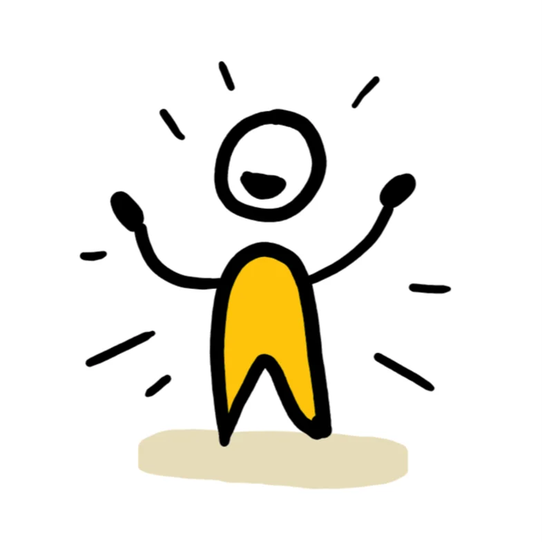
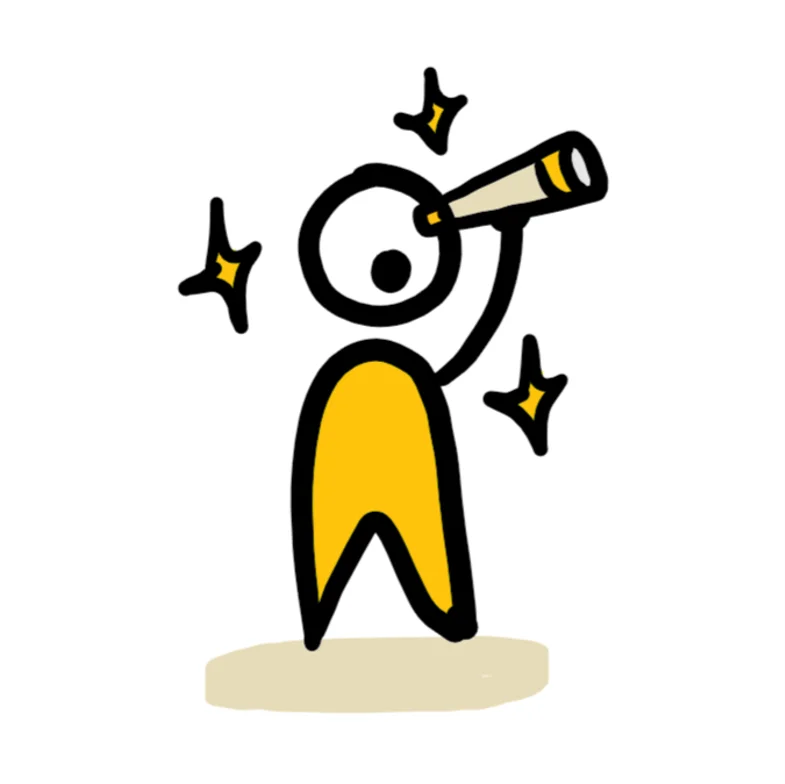
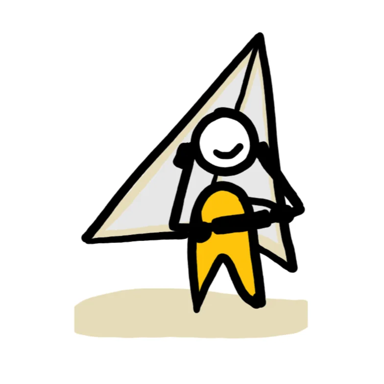

Tech trends
TechLinked — three videos per week summarizing the most important consumer-tech releases and updates.
Watch on YouTubeA short list of the resources, tools and people that helped shape Unstable Innovation.
Tell Nelson what you think about Unstable Innovation.

"Are Schools prepared for the Future?" — on YouTube.

The innovation agency that publishes the Unstable Innovation project.

Nelson's personal site — career, projects, talks.
Andreas Antonopoulos' classic Bitcoin introduction on YouTube.
Discover the decentralized social protocol Nelson uses.
People Nelson learns from regularly. If their work shaped Unstable Innovation, you'll see why.
TechLinked — three videos per week summarizing the most important consumer-tech releases and updates.
Watch on YouTubeAlex Hormozi — a master in scaling businesses with straightforward advice for entrepreneurs.
Watch on YouTubeChris Do (The Futur) — award-winning designer and one of the most talented negotiators online.
Watch on YouTubeAll hosted on GitHub Pages — same approach as this site.
A heartfelt thank you to Raioken agency for their work designing the cover of Unstable Innovation and crafting key elements of the original site. Your creativity and attention to detail brought our vision to life.